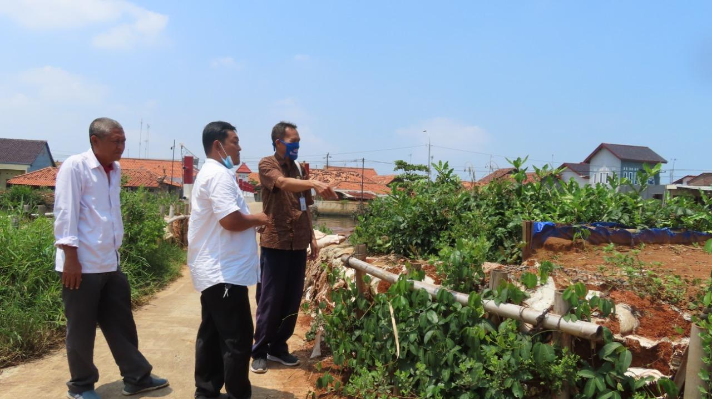

<html lang="en"></html>
<head>
    <meta charset="UTF-8" />
    <meta name="viewport" content="width=device-width, initial-scale="1.0">
    <center>
        <tittle>WEB TENTANG BENCANA BANJIR </tittle>
    </center>
    
</head>
<body marginleft="50px" style="background-image:url(bg2.jpg),url(bg1.jpg);font color: yellow;"></body>
<div class="tampilan berita" display="display:flex;margin-left:20px;margin-right:20px" >
    <p style="text-align: justify;" text-indent="20px">
        Dalam situs resmi Badan Nasional Penanggulangan Bencana (BNPB), banjir adalah peristiwa atau keadaan di mana terendamnya suatu daerah atau daratan karena volume air yang meningkat. Sedangkan, banjir bandang adalah banjir yang datang secara tiba-tiba dengan debit air yang besar yang disebabkan terbendungnya aliran sungai pada alur sungai.<br>
        Menurut Ligal (2008), banjir merupakan peristiwa di mana daratan yang biasanya kering (bukan daerah rawa) menjadi tergenang oleh air, hal ini disebabkan oleh curah hujan yang tinggi dan kondisi topografi wilayah berupa dataran rendah hingga cekung. Terjadinya bencana banjir juga disebabkan oleh rendahnya kemampuan infiltrasi tanah, sehingga menyebabkan tanah tidak mampu lagi menyerap air. Banjir dapat terjadi akibat naiknya permukaan air lantaran curah hujan yang diatas normal, perubahan suhu, tanggul/bendungan yang bobol, pencairan salju yang cepat, terhambatnya aliran air di tempat lain.<br>
        Dalam Kamus Besar Bahasa Indonesia (KBBI), banjir artinya berair banyak dan deras kadang kadang meluap, atau peristiwa terbenamnya daratan karena peningkatan volume air secara tiba tiba. Biasanya banjir terjadi karena adanya peningkatan volume air di sebuah badan air contohnya sungai dan danau, sehingga menjebol bendungan serta air keluar dari batasnya.<br>
        Selain karena hujan, banjir juga bisa terjadi ketika bukan musim hujan, yang biasanya terjadi di daerah pesisir laut. Banjir yang terjadi tidak berhubungan dengan cuaca ini disebut sebagai banjir rob. Banjir rob adalah peristiwa banjir yang berhubungan dengan air laut, sehingga tidak berhubungan dengan curah hujan.<br>
    <br>
        
    </div>
    <div class="tampilan berita selanjutnya"style="display:flex;margin-left:20px;margin-right:20px" >
        <p style="text-align: justify;" text-indent="20px">
                <b>Langkah Selanjutnya</b>
            Badan Penanggulangan Bencana Daerah (BPBD) menyatakan masyarakat, khususnya yang wilayahnya menjadi 'langganan' banjir, agar lebih siap dan siaga menghadapi musim hujan ini.<br>
            Berikut 10 langkah kesiapsiagaan menghadapi musim hujan seperti yang dibagikan BPBD:<br>
            1. Ikuti perkembangan informasi lewat media sosial BPBD DKI Jakarta & BMKG.<br>

2. Jika tinggal di dekat sungai, perhatikan ketinggian air sungai. Jika ketinggian air terus naik, bersiaplah!<br>

3. Simpan nomor darurat 112 & informasikan kepada seluruh anggota keluarga.<br>

4. Simpan surat-surat berharga ke dalam plastik & letakkan di tempat yang aman dan pastikan seluruh anggota keluarga mengetahuinya.<br>

5. Siapkan tas siaga bencana yang berisi pakaian, peralatan P3K dan kebutuhan pribadi untuk 3 hari.<br>

6. Pindahkan aset berharga ke lantai dua rumah atau tempat yang lebih tinggi.<br>

7. Cabut regulator gas dan colokan listrik untuk menghindari bahaya kebakaran dan tersetrum. Bungkus peralatan elektronik dengan plastik jika memungkinkan.<br>

8. Jika tidak dapat menyelamatkan semuanya, selamatkan apa yang dinilai mudah, berharga dan penting.<br>

9. Pastikan Anda mengetahui lokasi pengungsian di wilayah tempat tinggal anda, hubungi RT/RW setempat untuk informasi lokasi pengungsian.<br>

10. Jika harus mengungsi, di tengah pandemi Covid-19, tetap patuhi Protokol kesehatan (Memakai Masker, Mencuci Tangan, Menjaga jarak).<br>
<br>

    <b>Tas Siaga Bencana untuk Bertahan Saat Banjir Melanda</b><br>
Bencana banjir memang bisa datang kapan saja, apalag di musim hujan seperti sekarang ini. Untuk itu akan lebih baik jika mempersiapkan diri menghadapi banjir sebelum terlambat. Salah satunya dengan menyediakan tas siaga bencana.

Dilansir dari akun resmi Badan Nasional Penanggulangan Bencana (BNPB), Kamis, 2 Januari 2020, tas siaga bencana adalah tas yang dipersiapkan anggota keluarga untuk berjaga-jaga apabila terjadi suatu bencana atau kondisi darurat lainnya.

Tas siaga bencana sendiri memiliki fungsi untuk membantu bertahan hidup saat bantuan belum tiba. Selain itu, tujuan dari tas siaga bencana ini yaitu untuk mempermudah masyarakat saat proses evakuasi dilakukan.

Sayangnya, informasi mengenai pentingnya mempersiapkan tas ini belum tersebar luas di masyarakat. Sehingga, saat bencana seperti banjir saat ini melanda, banyak yang kebingungan mencari benda-benda yang bisa membantunya bertahan hidup.

Untuk itu, alangkah baiknya mulai dari sekarang untuk mempersiapkan tas siaga bencana Anda. Pilih salah satu tas yang ukurannya paling besar yang ada di rumah Anda. Catatlah barang-barang yang diperlukan oleh Anda dan keluarga. Setelah itu, pertimbangkan mana barang yang lebih penting untuk dibawa.

Jika sudah terkumpul semua, simpanlah tas tersebut di area yang mudah dijangkau dan jangan lupa untuk memberi tahu anggota keluarga letak penyimpanannya.

Dengan begitu, saat banjir melanda, Anda sudah siap menghadapinya, setidaknya mampu membantu untuk mempertahankan hidup sebelum bantuan datang.
<br>
<iframe width="560" height="315" src="https://www.youtube.com/embed/oK7ZKkkgfqw?start=88" title="YouTube video player" frameborder="0" allow="accelerometer; autoplay; clipboard-write; encrypted-media; gyroscope; picture-in-picture" allowfullscreen></iframe>
    </div>
    <p style="color: brown; font-size: 20px;margin-left: 30px;"categpri: Berita</p>
            
        </body>
        </html>
